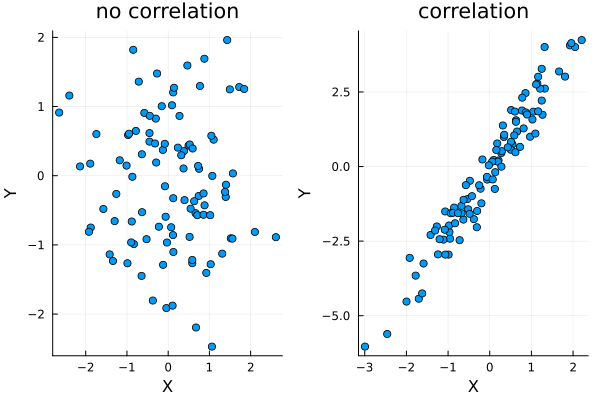
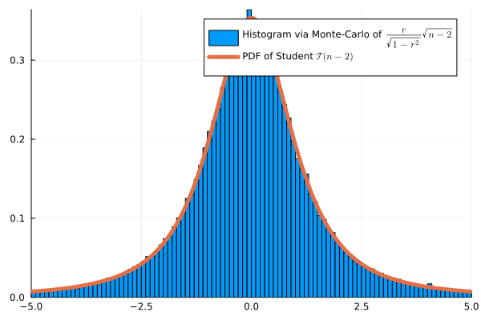
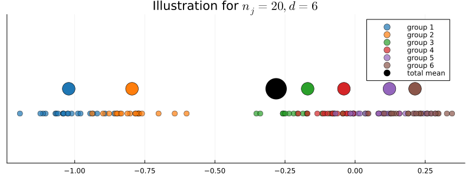
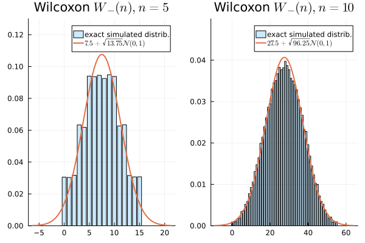

Pearson’s Correlation Test
\(r = \frac{\sum_{i=1}^n (X_i - \overline X)(Y_i - \overline Y)}{\sqrt{\sum_{i=1}^n (X_i - \overline X)^2\sum_{i=1}^n (Y_i - \overline Y)^2}}\)
\(\psi(X,Y) = \frac{r}{\sqrt{1-r^2}}\sqrt{n-2}\)
Under \(H_0\), \(\psi(X,Y) \approx \mathcal T(n-2)\)

Monte Carlo Simulation with \(n=4\):
ANOVA

ANOVA Test Statistic
\[ \left.\begin{array}{cl} \overline X_k &= \frac{1}{N_k} \sum_{i=1}^{N_k} X_{ik}\\ \overline{X} &= \frac{1}{N_{\mathrm{tot}}} \sum_{k=1}^d N_k\overline X_{k},&\end{array}\right. \left.\begin{array}{cl} V_k &= \frac{1}{N_k}\sum_{i=1}^{N_k} (X_{ik} - \overline X_k)^2 \\ V_W &= \frac{1}{N_{\mathrm{tot}}} \sum_{k=1}^d N_kV_k\\ V_B &= \frac{1}{N_{\mathrm{tot}}}\sum_{i=1}^{N_k} N_k(\overline X_k - \overline X)^2\\ V_{T} &= \frac{1}{N_{\mathrm{tot}}}\sum_{k=1}^d\sum_{i=1}^{N_k} (X_{ik} - \overline X)^2 \end{array} \right. \]
\[\psi(X) = \frac{\tfrac{1}{N_{\mathrm{tot}} - d}\sum_{k=1}^d SS_k}{\tfrac{1}{d-1}SSB}=\frac{\tfrac{1}{N_{tot}-d}V_W}{\tfrac{1}{d-1}V_B} = \frac{d-1}{N_{tot}-d} \frac{V_W}{V_B} \sim \mathcal F(N_{tot}-d, d-1) \; .\]
| bag 1 | bag 2 | bag 3 | Total | |
|---|---|---|---|---|
| color 1 | \(X_{11}\) | \(X_{12}\) | \(X_{13}\) | \(R_1\) |
| color 2 | \(X_{21}\) | \(X_{22}\) | \(X_{23}\) | \(R_2\) |
| Total | \(N_1\) | \(N_2\) | \(N_3\) | \(N\) |
Chi-Squared Homogeneity Test Statistic
| Age Group | Young Adults | Middle-Aged | Seniors | Total |
|---|---|---|---|---|
| Coke | 60 | 40 | 30 | 130 |
| Pepsi | 50 | 55 | 25 | 130 |
| Sprite | 30 | 45 | 55 | 130 |
| Total | 140 | 140 | 110 | 390 |
\[ \begin{aligned} \psi(X) &= \frac{(60-46.7)^2}{46.7}&+ \frac{(40-46.7)^2}{46.7}&+\frac{(30-36.7)^2}{36.7} \\ &+\frac{(50-46.7)^2}{46.7}&+ \frac{(55-46.7)^2}{46.7}&+\frac{(25-36.7)^2}{36.7}\\ &+\frac{(30-46.7)^2}{46.7}&+ \frac{(45-46.7)^2}{46.7}&+\frac{(55-36.7)^2}{36.7}\\ &\approx 26.57 \end{aligned} \]
Example of contingency table:
| Gender | Male | Female | Total |
|---|---|---|---|
| Coffee | 30 | 20 | 50 |
| Tea | 28 | 22 | 50 |
| Total | 58 | 42 | 100 |
Expected counts:
| Gender | Male | Female | Total |
|---|---|---|---|
| Coffee | 29 | 21 | 50 |
| Tea | 29 | 21 | 50 |
| Total | 58 | 42 | 100 |
Symetrization
We observe iid pairs of real numbers \((X_1, Y_1), \dots, (X_n, Y_n)\). The density of each pair \((X_i, Y_i)\) is unknown \(p_{XY}(x,y)\).
The marginal distribution of \(X_i\) and \(Y_i\) are, respectively, \[p_X(x) = \int_{y \in \mathbb R} p_{XY}(x,y)~~~~ \text{ and }~~~~ p_{Y}(y) = \int_{x \in \mathbb R} p_{XY}(x,y) \; .\]
\(H_0:\) The median of \((X_i - Y_i)\) is \(0\) for all \(i\)
\(H_1:\) The median of \((X_i - Y_i)\) is not \(0\) for some \(i\) [Wooclap]
Generality of \(H_0\)
Warning
Properties on the Signed Ranks
Under \(H_0\),
Signs of the \((D_i)\)’s are independent and uniformly distributed in \(\{-1, 1\}\).
In particular, the number of signs equal to \(+1\) follows a Binomial distribution \(\mathcal B(n,0.5)\).
The ranks \(R_i\) of the \((|D_i|)\)’s does not depend on the unknown density \(p_{X-Y}\). \((R_1, \dots, R_n)\) is a random permutation under \(H_0\).
Hence, any deterministic function of the ranks and of the differences is a pivotal test statistic: it does not depend on the distribution of the data under \(H_0\).
Properties on the Signed Ranks
This approximation fits well the exact distribution. Monte-Carlo simulation:

| Patient | \(X_i\) (Before) | \(Y_i\) (After) | \(D_i = X_i-Y_i\) | \(R_i\) |
|---|---|---|---|---|
| 1 | 150 | 140 | 10 | 6 (+) |
| 2 | 135 | 130 | 5 | 5 (+) |
| 3 | 160 | 162 | -2 | 2 (-) |
| 4 | 145 | 146 | -1 | 1 (-) |
| 5 | 154 | 150 | 4 | 4 (+) |
| 6 | 171 | 160 | 11 | 7 (+) |
| 7 | 141 | 138 | 3 | 3 (+) |
[0.00784066, 0.00781442, 0.00781534, 0.01563892, 0.01562184, 0.02343478]